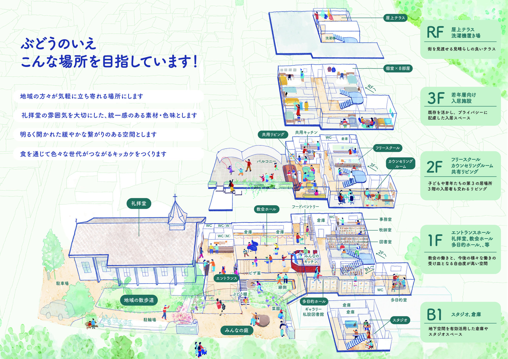

東京聖テモテ教会 牧師 ヨセフ 太田 信三 司祭
地域の方々が気軽に立ち寄れる場所にします
礼拝堂の雰囲気を大切にした、統一感のある素材・色味とします
明るく開かれた緩やかな繋がりのある空間とします
食を通じて色々な世代がつながるキッカケをつくります

礼拝堂に隣接して建つ新しい建物は、地下1階から屋上テラスまで、世代と働きが交わる場として設計されています。
街を見渡せる見晴らしの良いテラス。
既存を活かし、プライバシーに配慮した入居スペース。
子どもや青年たちの第3の居場所。3階の入居者も交わるリビング。
教会の働きと、今後の様々な働きの受け皿となる自由度が高い空間。みんなのキッチン、フードパントリー、図書室、牧師室、事務室も。
地下空間を有効活用した倉庫やスタジオスペース。
特定非営利活動法人 Woods
（代表理事：東京諸聖徒教会信徒 金木 遥さん）
片岡 彩さん
（カウンセリングルーム Pokke 主宰、東京教区ハラスメント相談員、臨床心理士、公認心理師、精神保健福祉士、日本学生相談学会認定大学カウンセラー 等）